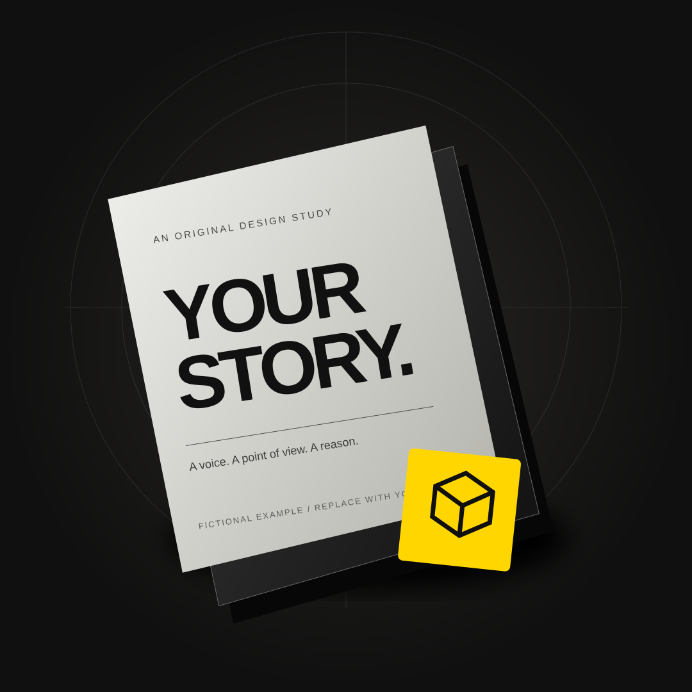

CINEMATIC STARTER / FICTIONAL EXAMPLE
YOUR BRAND.
YOUR NEXT
CHAPTER.
Your story. Your offer.
One clear next step.
An original design example. Ready for your direction.
CINEMATIC STARTER / FICTIONAL EXAMPLE
Your story. Your offer.
One clear next step.
An original design example. Ready for your direction.
“Give a clear idea
a memorable first impression.”
Fictional example: introduce one clear idea for the page.
01 / YOUR OFFER
Every panel below is a placeholder.
Give it your own useful detail.
Replace this example with a clear, specific description of your real offer.
No service, price, availability, or result is claimed by this starter.
Fictional design example. No products or services are being sold here.
02 / YOUR APPROACH
A visual structure for the details that make
your business or personal brand distinctive.
Replace this paragraph with one specific thing a visitor needs to understand about your real offer.
Use a genuine detail about your methods, values, or work. A plain, specific sentence is a strong start.
Explain what happens after a visitor takes your primary action. Connect it to a real destination before launch.
03 / YOUR PROCESS
This six-step structure is illustrative.
Keep only the steps your business needs.
Describe the actual need, question, or goal that brings someone to you.
Explain how you learn what matters and whether you are a good fit.
Share how scope, expectations, and decisions become clear.
Replace this with an honest description of the work you actually do.
Describe a real review point, if one belongs in your process.
Explain what someone receives or can do next. Do not invent deliverables.

ORIGINAL ILLUSTRATION / PLACEHOLDER04 / YOUR STORY
This space is for the real story behind your work. Introduce the person, team, practice, or idea a visitor should get to know.
The illustration beside it is an original placeholder. Replace it with relevant authorized imagery, or choose an intentional direction that needs no photograph.
Make this your story ↗05 / A FEW USEFUL ANSWERS
No. “Your Brand” is a clearly fictional design example. Its words, artwork, and interactions demonstrate a starting structure. They do not represent an actual business or offer.
Your verified offer, genuine story, relevant assets, and a real next step. Keep sections that help your visitors and remove ones that do not.
No. The sequence is an authored illustration. It does not run a service, call an AI model, access business data, or create a result.
It opens the next-step section on this page. Before publishing, replace that destination with your confirmed contact, booking, purchase, or other relevant action.
Yes. Use the visible motion control. The experience also respects your system’s reduced-motion preference and keeps its text and navigation available when the 3D scene cannot run.
YOUR BRAND. YOUR REAL NEXT STEP.
Fictional starter · replace all placeholders before publishing.